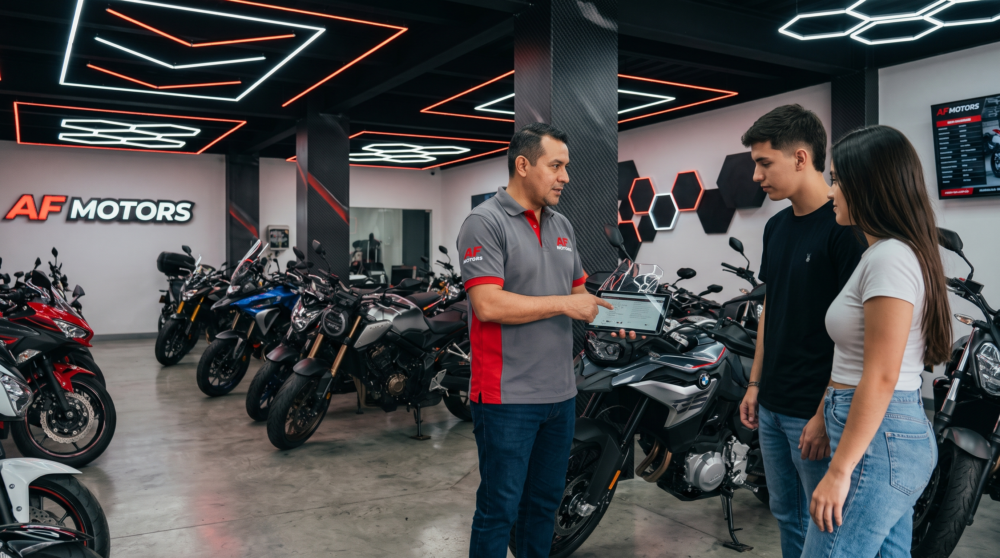

01
ACOMPAÑAMIENTO PERSONALIZADO
ASESORÍA PERSONALIZADA
Sabemos que elegir una motocicleta es una decisión importante. Por eso te acompañamos durante el proceso para encontrar una opción que se adapte a tus necesidades.
- Orientación durante la compra.
- Información sobre las motocicletas disponibles.
- Acompañamiento durante la negociación.